Tamme Claus1, Gaurav Achuda2, Silvia Richter2, Manuel Torrilhon1
1 ACoM, Applied and Computational Mathematics, RWTH Aachen University
2 GFE, Central Facility for Electron Microscopy, RWTH Aachen University
ACoM Lunch Seminar
07.07.2026
"Material imaging based on characteristic x-ray emission"
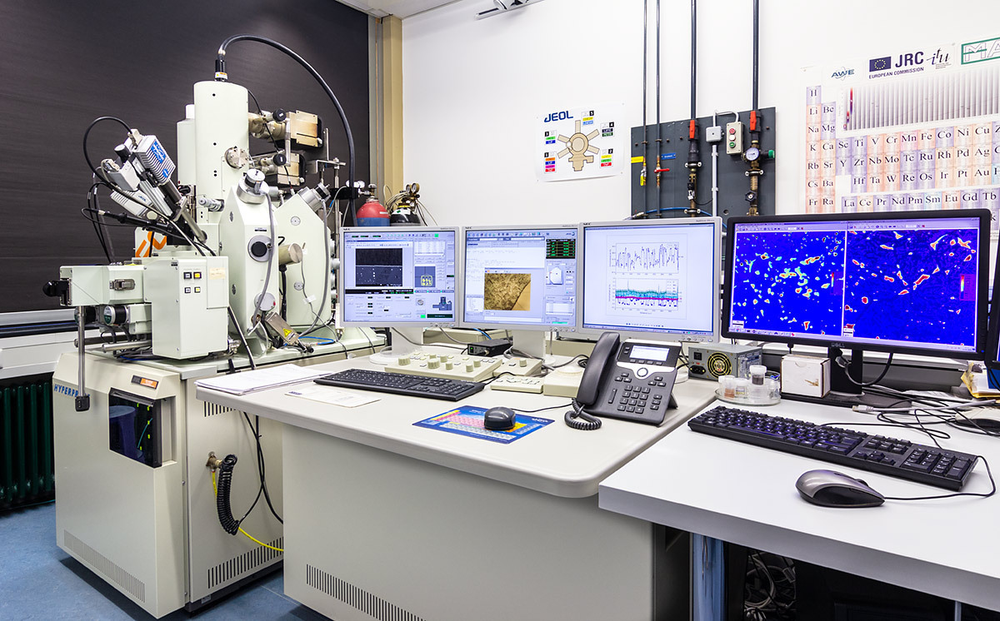
Microprobe at GFE (source: gfe.rwth-aachen.de)
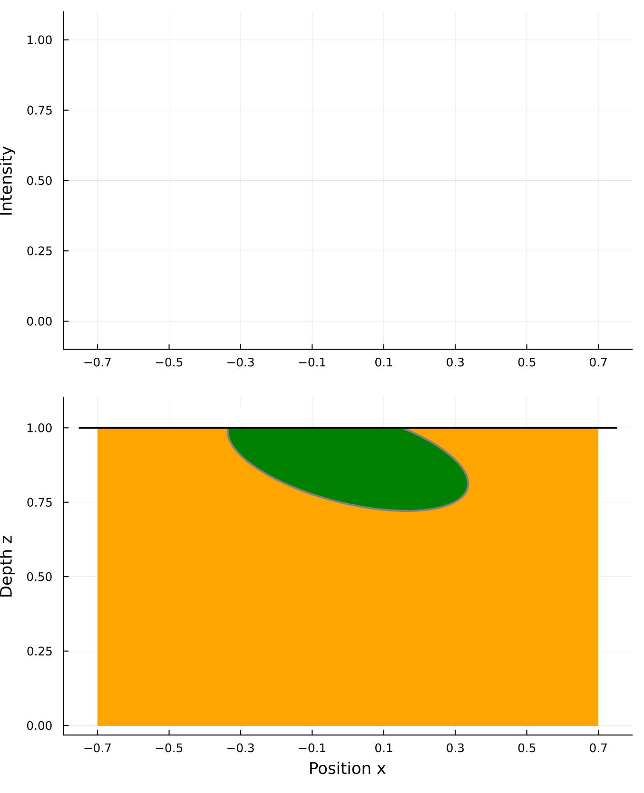
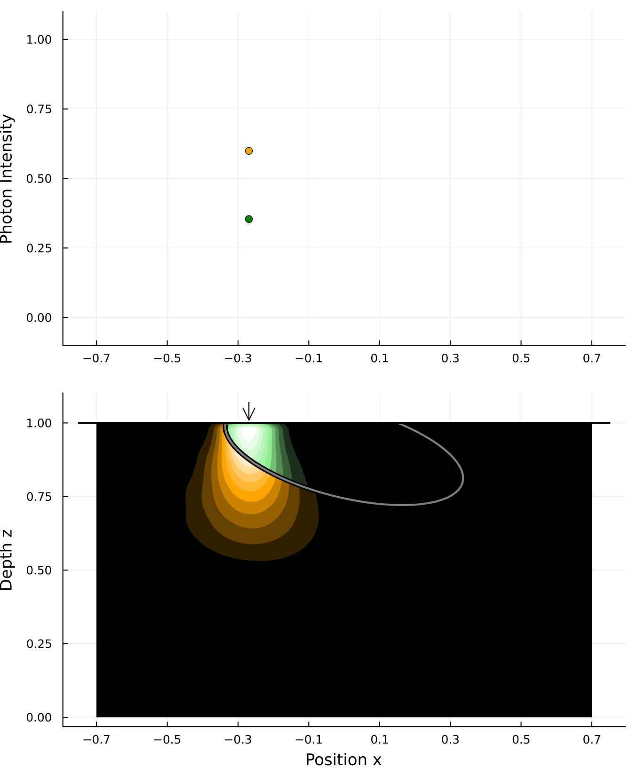
while (∇ₚC != 0) foreach δp foreach beam solve_pde() end end end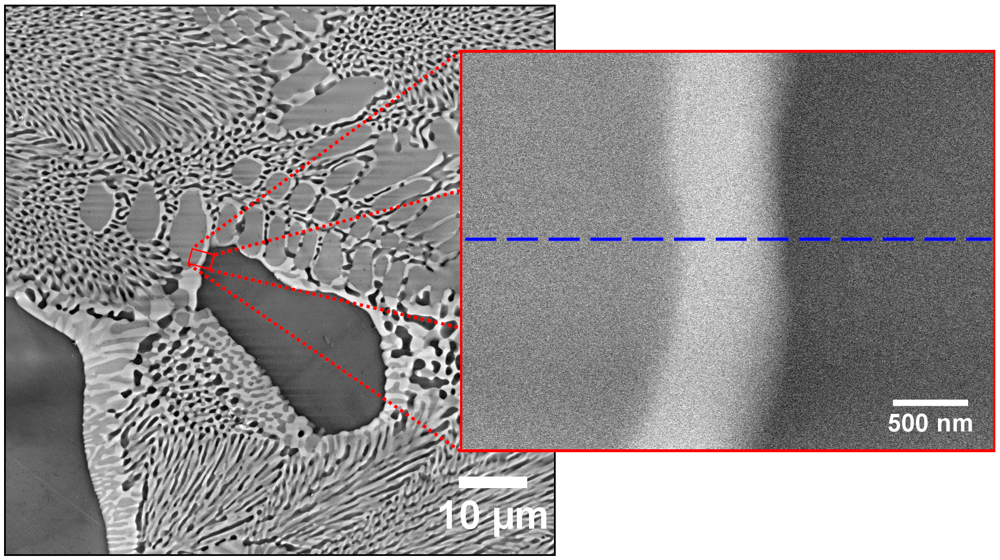
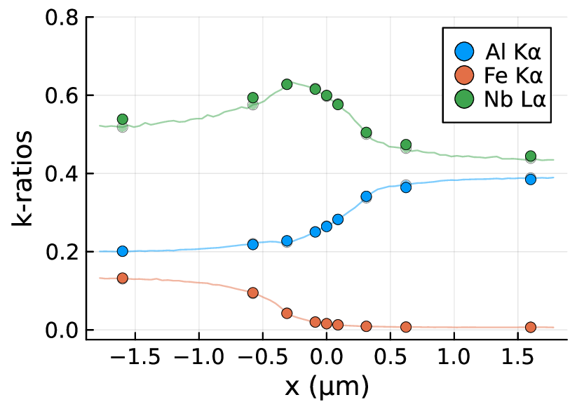
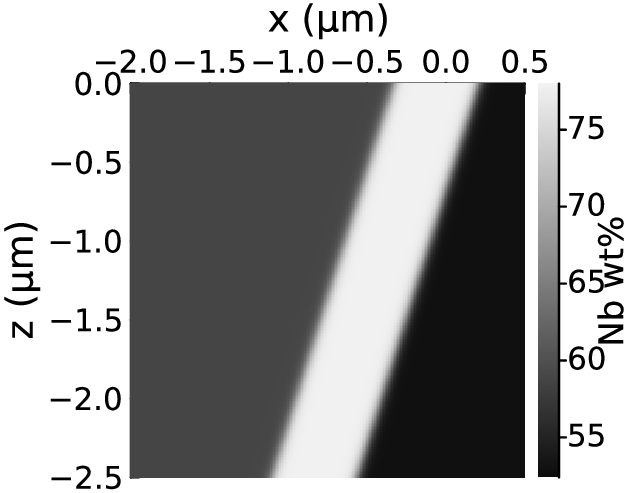
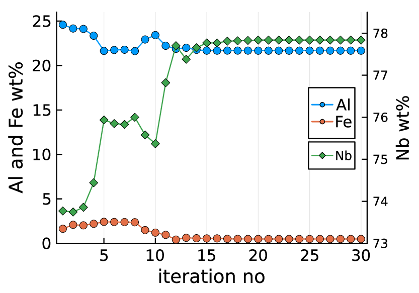
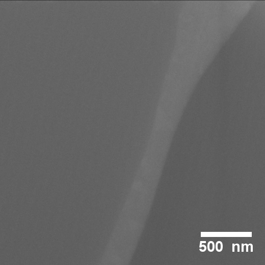
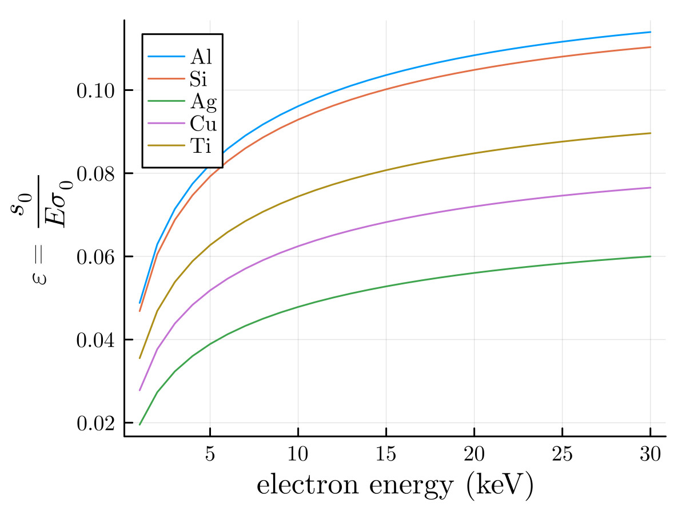
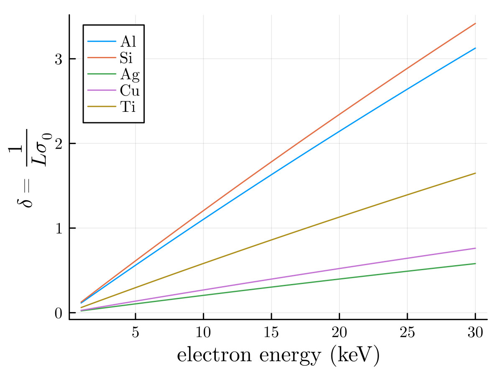
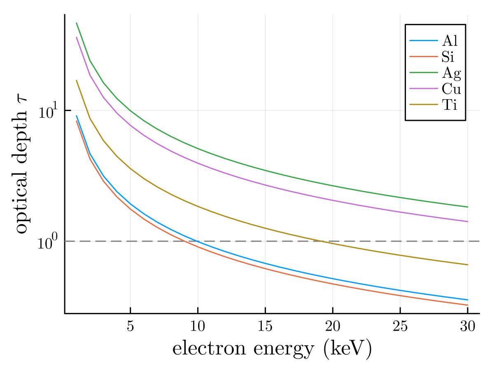
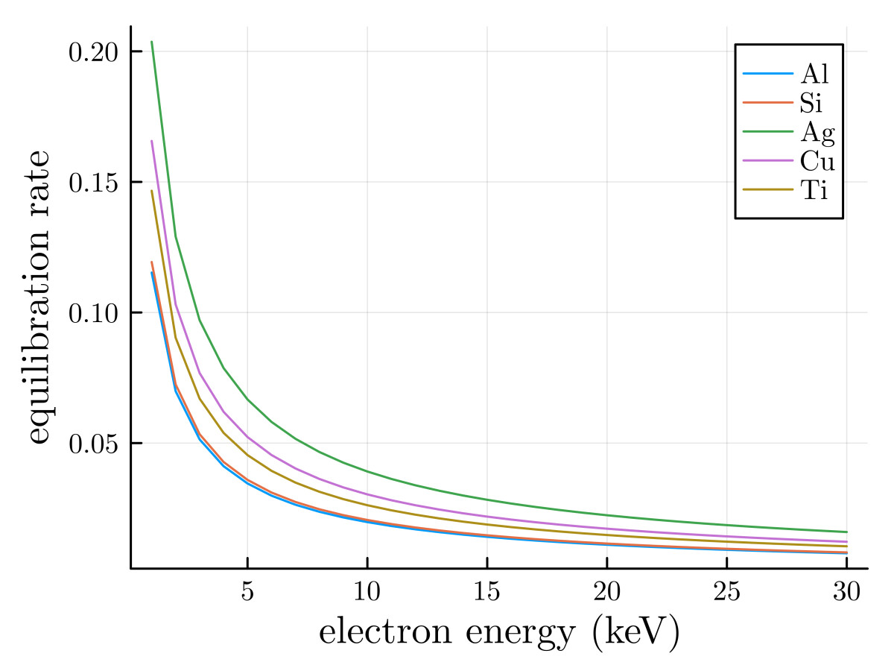
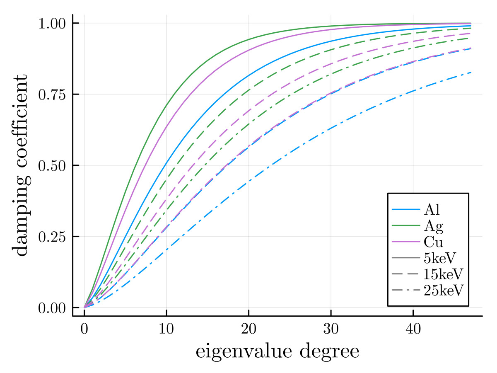